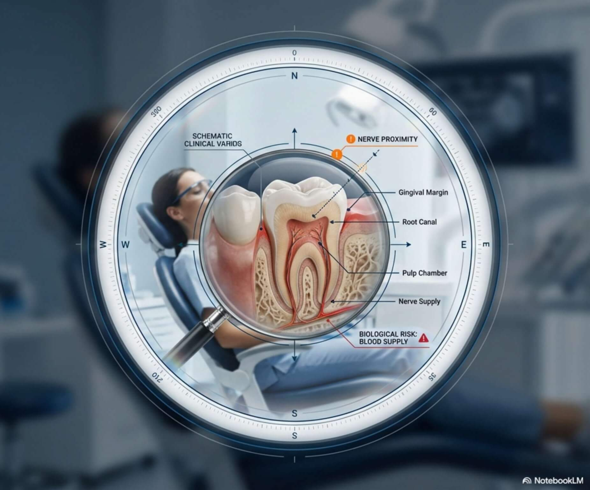

🦷 لماذا يعود ألم الأسنان بعد الحشو؟

يعتقد كثير من المرضى أن حشو السن يعني انتهاء المشكلة تماماً، لكن في بعض الحالات قد يعود الألم أو تظهر حساسية مفاجئة. فهم السبب هو الخطوة الأولى للعلاج الصحيح وتجنب فقدان السن.
أسباب شائعة لعودة الألم:
- تسوس عميق جداً: عندما يكون التسوس قريباً من العصب، قد يظل السن متحسساً لفترة بعد الحشو نتيجة الحرارة أو البرودة.
- ارتفاع الحشوة (High Spot): حتى لو كان الفرق أجزاءً من المليمتر، فإن الضغط الزائد أثناء المضغ يسبب ألماً يشبه الصدمة الكهربائية.
- التهاب العصب الخفي: في بعض الحالات، يكون العصب قد تضرر بالفعل قبل الحشو، مما يجعل السن بحاجة إلى "سحب عصب" بدلاً من الحشو العادي.
✨ كيف نضمن راحة مرضانا؟
في مركز الدكتور نشوان الخولاني، نستخدم مواد حشو (Composite) من أجود الأنواع العالمية، ونعتمد على التجفيف والتعقيم الدقيق للسن قبل الحشو لضمان عدم حدوث التهابات مستقبلية، مع فحص إطباق الأسنان بدقة متناهية.
هل تعاني من ألم مزعج بعد حشو قديم؟
لا تترك الألم يتفاقم؛ الفحص البسيط قد ينقذ سنك من الخلع.
تواصل معنا للتشخيص الآن